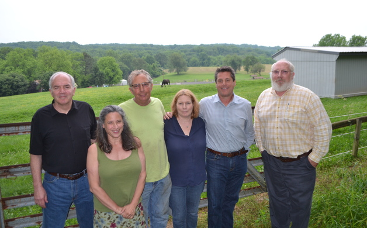
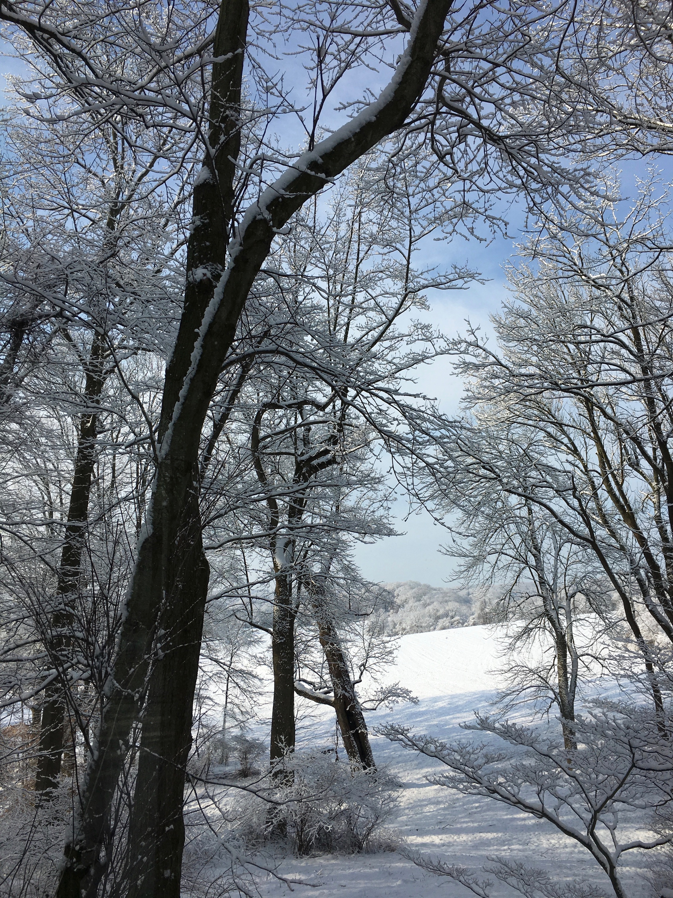
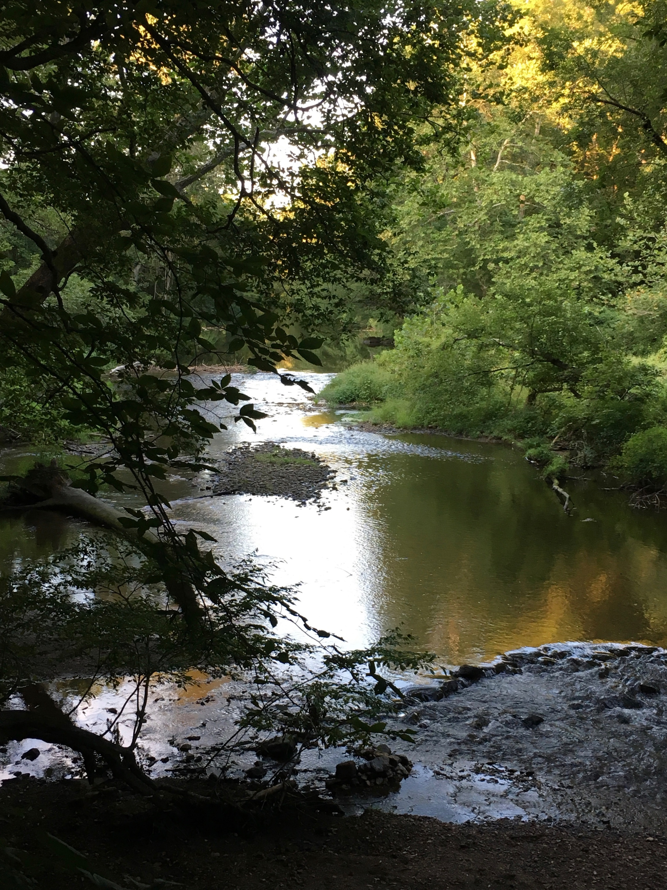

Latest Updates
Take a moment now to mark your calendars!
ECO-SITE / T. MOBILE NEW GARDEN TOWNSHIP PROPOSED CELL TOWER ZONING HEARING DECEMBER 14, 2017 7:30 PM
New Garden Township Building
(New Garden Township, 299 Starr Road, Landenberg PA 19350)
Your Community needs your active participation, please be present at this extremely important Hearing!
ECO -SITE / T. MOBILE HAS REAPPLIED UNDER THE NEW NGT COMMUNICATIONS TOWER ORDINANCE FOUND HERE.
WE ARE STARTING OVER COMPLETELY!
YOU MUST BE PRESENT AT THE HEARING TO APPLY FOR PARTY STATUS!
(This is not a continuation of the Conditional Use Hearing. The NGT Board of Supervisors will not be present, BUT the NGT Zoning Board will be.
This is an entirely new application!)
See NGT Zoning Board Members: Do not attempt to contact the board, they may only hear testimony at the hearing, you must be present to voice your opposition!
https://www.newgarden.org/zoning-hearing-board
For More Information about the Zoning Board Hearing:
https://www.newgarden.org/sites/newgardenpa/files/events/eco_site_2017_.pdf
The proposed tower’s range is 1 to 1.5 miles and WILL NOT benefit the residents of Landenberg north of Broad Run Rd nor the emergency responders who so desperately need this service!
See you there Landenberg Residents, Tax Payers, NGOs!
Let's work together to move this tower!
The Issue
A 130-foot communications tower is proposed to be constructed on residential property abutting White Clay Creek Preserve. We ask for your support, to join your neighbors, and the many concerned citizens of Landenberg, in saying NO to the placement of this tower in a sensitive ecological area and YES to moving it to a more suitable commercial or municipal location.
While we all support having better cellular service in our area, it need not be at the expense of Landenberg residents. Placing the tower in a residential area which abuts the White Clay Creek Preserve and is near the Wild and Scenic White Clay Creek Watershed will not only lower residential property values (by millions of dollars) and destroy the aesthetic views throughout Landenberg and adjacent properties in Delaware, but will also negatively impact migratory birds, birds of conservation concern, and homes on the historic registry.
The area proposed by Eco Site, LLC, working with T. Mobile, for its tower is a beautiful pastural farmland setting and residential area. Destroying usable farmland and pasture and industrializing an unspoiled area that historically has been untouched and used only for farming, is senseless. There are commercial and municipal options available in Landenberg. Once an area has been industrialized, it is rarely, if ever, reclaimed. Please act now to Keep Landenberg Beautiful!
About
An application has been received for conditional use approval by the New Garden Township Board of Supervisors to construct a 130-foot communications tower on property owned by Anthony J. Santoro and Renee L. Santoro, located at 1511 Yeatman's Station Road, Landenberg PA. The property is located within the R-1 Residential Low Density Zoning District.
Concerned citizens of Landenberg oppose the placement of a communications tower on the Santoros’ property due to its proximity to the White Clay Creek Preserve. The White Clay Creek Preserve possesses outstanding scenic, wildlife, recreational, and cultural value. It is home to over 90 species of birds and provides habitat to over 100 varieties of migratory birds, including American Bald Eagles; birds of conservation concern, and rare plants, including three endangered, one threatened, and two rare plant species. Those birds, and accordingly, the habitat, would be at risk if the tower is built in the proposed location. Studies show that communication towers negatively impact the health of birds and wildlife, not only those living in the vicinity, but also those that migrate through the area. Furthermore, Congress has designated White Clay Creek as a National Wild and Scenic River. It is imperative that the Creek be preserved for the benefit and enjoyment of present and future generations to come.
Beyond the irreparable harm to the birds and habitat of the Preserve, the proposed tower will cause property values in the vicinity of the Preserve to decline. The construction and operation of the communications tower on the Santoros’ property would negatively impact the Preserve ruining the view both from the Park and from many homes in the vicinity of the park. As a result, residential communities surrounding the Park would see a marked reduction in their property values. Those residents purchased their homes, and paid a premium price for, the visual beauty which the Park provides. They did not do so in anticipation that view would be destroyed by a communications tower. Camouflage will not remedy the damage caused by the tower. Stealth means of camouflage would create an eyesore as the tower would be some thirty feet above the natural tree line and could be seen for miles around.
There are other commercial and municipals lands available in New Garden Township, which would not pose the same concerns as the location proposed by the Santoros. For all of the reasons stated above, concerned citizens of Landenberg respectfully ask the Board of Supervisors to vote NO to placing a communications tower on the Santoros’ property which located in the midst of some of the most beautiful, scenic, unique, lands in New Garden and London Britain Townships, and within Southern Chester County as a whole. Please consider using an alternative location and alternative technologies that would better serve the needs of all members of our community to provide safe mobile phone coverage without adverse environmental and economic impacts to our citizens.
How to Help
- Sign the Petition! Every adult member of your family can sign!
- Write OR Call:
- Tony Scheivert, New Garden Township Manager (email, (610) 268-2915 ext. 102)
- Attend the hearings! Add it to your calendar! The MOST IMPORTANT HEARING will take place at the New Garden Township Building ON DECEMBER 14th at 7PM, Check back for updates.
- Contact Senator Dinniman! (site, 610-692-2112)
- Like us on Facebook
Contact Us
Click here to contact us.
Recommended Reading
-

Protecting the 'Jewel in a Crown'
by Richard L. Gaw Linked Here
- Dr. Albert Manville, after retiring in 2014 as the U.S. Fish and Wildlife Service’s agency lead on impacts from structures and radiation to migratory birds — including from communication towers — released a peer-reviewed briefing memorandum about known, suspected and yet uncertain impacts from thermal and non-thermal radiation on birds and other wildlife from communication towers (Manville 2016). Impacts from radiation on breeding, nesting, and roosting migratory birds at the proposed EcoSite tower need also to be assessed under the National Environmental Policy Act, compatability issues pertaining to the mandates of wildlife and habitat protection under the Game Commission’s Preserve designation, and related compatibility issues mandated by federal legislation and regulations (e.g., National Park Service Organic Act).
Linked Here
- USFWS updated voluntary communication tower guidelines in 2013 to reflect new research findings, additional concerns, and suggested best practices in avoiding and minimizing the killing, injury and crippling loss of more than 1,000 species of protected migratory birds, hundreds of which have been documented killed by collisions with towers in the U.S and Canada. In addition, troubling new research findings from field studies on migratory birds in Europe from tower radiation impacts must also be assessed.
(Manville) Linked Here
- Eco-Site conditional use application submitted to New Garden Township.
Linked Here
- The proposed tower may sit vacant without customers, read on:
Here
Protecting the 'Jewel in a Crown'
by Richard L. Gaw Linked Here
Linked Here
(Manville) Linked Here
Linked Here
Here

